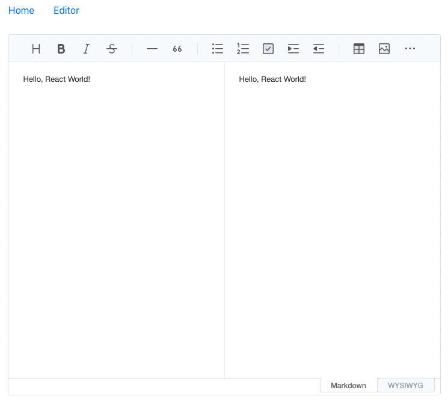

토스트에디터 리액트 적용기 1

Toast UI Editor를 React에 적용하는 과정을 기록했습니다.
WSYWIG는 What You See Is What You Get의 줄임말로, WSYWIG 에디터는 말 그대로 작성한 대로 보이는 에디터입니다. 블로그나 게시판 글 작성에서 흔히 쓰이는, 스타일을 직접 수정하고 글을 작성하는 그런 에디터 말이지요.
본 글은 WSYWIG 에디터 중 한 종류인 Toast UI Editor를 리액트 개발환경에 적용한 기록입니다.
서론: WYSIWYG 에디터 & Toast UI Editor
프로젝트 중 WSYIWIG 에디터가 필요하게 됐습니다. 그리고 리액트 환경에서의 인기 WSYIWIG 에디터들은 대략 다음과 같은 에디터들이 있는 걸 알게 되었습니다.
-
Draft Editor -
Quill Editor -
ckEditor 5 -
Summer Note
그 중 가장 눈에 들어왔던 것은 Draft Editor. 페이스북에서 사용하는 에디터인데, 드래프트 에디터와 React 모두 페이스북에서 만들어졌으니 참으로 찰떡이로다 라는 리뷰를 보고 Draft Editor를 적용하려 했습니다.
그러나 오잉, 생각지도 못했던 문제 발생. 한글 입력 이슈였습니다. 조합형인 한글 특성상, 커서가 아직 작성 중인 한글에 존재하는 데 Shift + Enter1를 입력하면, 입력 중이던 내용이 모두 날아가 버리는 것입니다.
Quill Editor 역시 마찬가지였고, ckEditor의 경우 오픈소스 정책상 문제가 있을 수 있다고 판단해 보류했습니다.
그러던 중 발견한 Toast UI Editor. “오픈소스 WYSIWIG 에디터, NHN이 개발? 이거면 한글 날아갈 일은 없겠는데?”
한글 환경에서의 가장 안정적인 에디터로 판단했고, 이에 프로젝트에 적용하기로 했죠.
Toast UI Editor 적용하기
Toast UI Editor Github: https://github.com/nhn/tui.editor
리액트 에디터: https://github.com/nhn/tui.editor/tree/master/apps/react-editor
Toast UI Editor(TUI 에디터)를 리액트 프로젝트에 적용하는 방법은 그렇게 어렵지 않습니다. 한국 공식 가이드를 따라하기만 하면 되니까요.
먼저 리액트 환경에 에디터를 설치해줍니다. 여기서는 npm을 사용하겠습니다.
|
|
이제 TUI 에디터를 불러와줍니다!
|
|

몇 가지 옵션 값을 주어 컴포넌트로 만들었습니다. 전체 코드는 다음과 같습니다.
|
|
|
|
전체 Properties를 비롯한 API에 대한 설명은 https://nhn.github.io/tui.editor/latest/ 페이지에서 찾아볼 수 있습니다.
이제 기본적인 사용을 위한 준비가 모두 되었습니다. 다음 글에서는 해당 컴포넌트를 사용해 프로젝트에서 활용했던 내용을 적어보겠습니다.
-
엔터 입력 시
</p><p>가 자동 생성되어 줄 간격이 너무 넓어져 , 해당 커맨드를 통해<p>를 새로 삽입하지 않고 줄 바꿈이 가능합니다. ↩︎